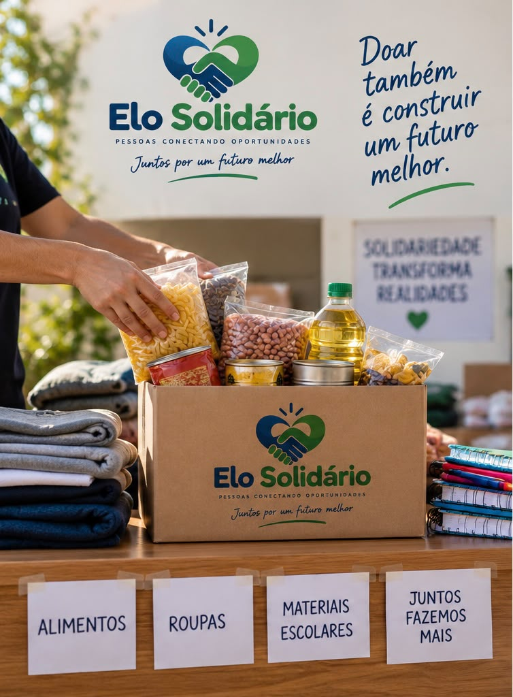

Doações
Ativo
Projeto de Doações
Arrecadamos alimentos, roupas, materiais escolares e recursos financeiros para ajudar pessoas e famílias em situação de vulnerabilidade.
Doações abertas!
Estamos recebendo contribuições para nossas ações.
Como você pode ajudar?
- Doação de alimentos não perecíveis;
- Roupas em bom estado;
- Materiais escolares;
- Contribuições financeiras.
Os valores arrecadados são utilizados na compra de alimentos, roupas, materiais escolares e na manutenção dos projetos da ONG.
Ver detalhes